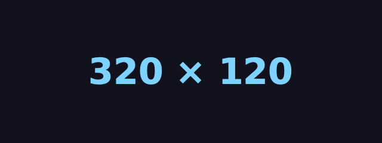
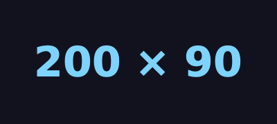
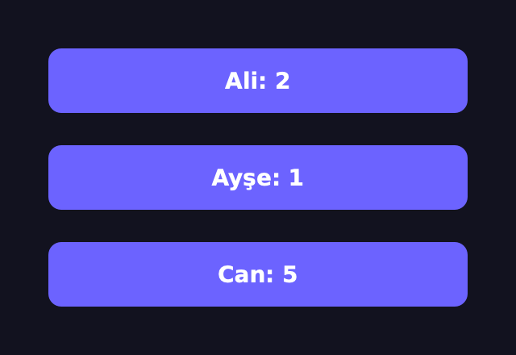
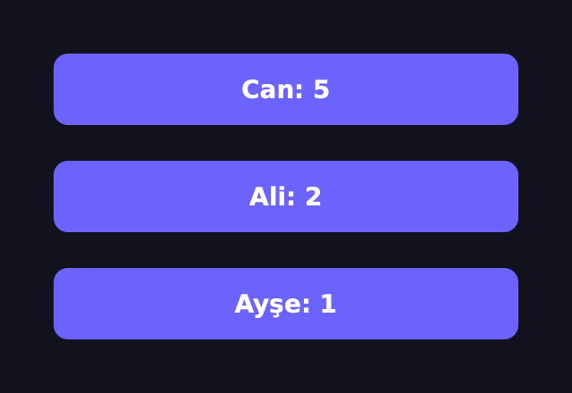
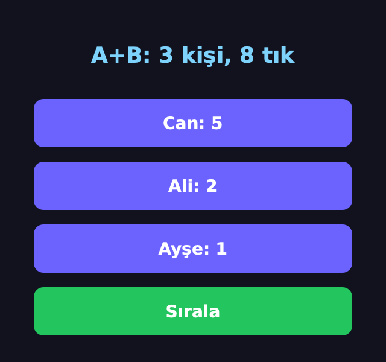

Aynı Ad,
Farklı İmza?
Overriding & Overloading — Olaylar ve Operatörler
Ezmeyi Biliyoruz — Şimdi Aşırı Yükleme
Override'ı H3'te gördük: çocuk, atanın metodunu aynı imzayla yeniden yazar. Overload başka bir fikir: aynı ad, farklı imza. Python'da bunun kendine özgü bir yolu var.
1 · Qt olaylarını ez
resizeEvent,
keyPressEvent, closeEvent: Qt çağırır, biz yazarız.
2 · Overload?
Python'da iki def yan yana
yaşamaz. Varsayılan argüman, *args, tür ile seçim.
3 · Operatörler
+, ==,
<: dunder metotlarla kendi sınıfına öğret.
4 · Qt'de
C++ aşırı yüklemeleri: resize(320, 170) ve resize(QSize).
Sonunda: + ile birleşen, sorted() ile
sıralanan bir puan tablosu.
Ezmenin İki Kuralı
✍️ H3 · Aynı ad
Çocuk, atanınkiyle aynı adda metot yazınca kendi sürümü çalışır.
🤝 H3 · super()
Atanın işini korumak için önce super().metot(), sonra kendi farkın.
📐 H4 · Aynı imza
Liskov: ata gibi çağrılabilmeli. artir(self, adim) yazınca döngü
kırılmıştı.
Bu hafta bu iki kuralı Qt'nin olay metotlarında kullanacağız. Sonra şunu soracağız: imzayı bilerek değiştirmek istesek, yani overload?
Override mı, Overload mı?
| Override (ezme) | Overload (aşırı yükleme) | |
|---|---|---|
| ad | aynı | aynı |
| imza | aynı | farklı (parametre sayısı / türü) |
| nerede | çocuk sınıfta | aynı sınıfta |
| kim seçer | nesnenin türü, çağrı anında (H4) | argümanların türü (Java/C++'ta derlerken) |
| Python'da | ✓ her yerde | ✗ klasik hâli yok; başka yollar var |
Kısaca: override dikey (ata → çocuk), overload yatay (aynı sınıfta yan yana).
Pencere Büyüyünce: resizeEvent
class BoyutEtiketi(QLabel):
def resizeEvent(self, olay): # Qt çağırır
super().resizeEvent(olay) # Qt'nin işi sürsün
b = olay.size()
self.setText(f"{b.width()} × {b.height()}")
e = BoyutEtiketi()
e.resize(320, 120)
e.show()
e.text() # '320 × 120'
e.resize(200, 90) # pencereyi küçült
e.text() # '200 × 90'

Qt her boyut değişiminde
resizeEvent(olay)'ı çağırır. super() önce Qt'nin kendi işini yaptırır.
Tuşa Basılınca: keyPressEvent
class TusSayaci(QLabel):
def __init__(self):
super().__init__("0")
self.sayac = 0
def keyPressEvent(self, olay): # her tuşta Qt çağırır
if olay.key() == Qt.Key_Plus:
self.sayac += 1
elif olay.key() == Qt.Key_Minus:
self.sayac -= 1
else:
super().keyPressEvent(olay) # gerisi Qt'ye
self.setText(str(self.sayac))
t = TusSayaci()
t.show()
QTest.keyClicks(t, "++-+") # klavyeyi taklit et
t.text() # '2'🎹 olay.key()
Hangi tuş? Qt.Key_Plus,
Qt.Key_Minus… Olay nesnesi bilgiyi taşır.
🤝 Gerisi Qt'ye
Bilmediğin tuşu super()'ya bırak; Tab, kısayollar çalışmaya devam eder.
🧪 QTest.keyClicks klavyeyi taklit
eder: olay kodunu insansız denemenin yolu.
Kapatılırken: closeEvent
class Duzenleyici(QWidget):
def __init__(self):
super().__init__()
self.kaydedildi = False
def closeEvent(self, olay): # pencere kapanırken
if self.kaydedildi:
super().closeEvent(olay) # kapanmaya izin ver
else:
olay.ignore() # kapatmayı iptal et
d = Duzenleyici()
d.show()
d.close() # False
d.isVisible() # True
d.kaydedildi = True
d.close() # True🛑 olay.ignore()
“Bu olayı yok say”: pencere açık kalır, close() False döner.
💬 Gerçekte
Burada bir QMessageBox
“Kaydedilmedi, çıkılsın mı?” diye sorar; cevaba göre ignore ya da super().
Qt Olay Gönderir, Ezilen Metot Yakalar
İmzayı Bozarsan Qt Söyler
class Bozuk(QLabel):
def keyPressEvent(self): # ⚠️ olay parametresi yok
print("tuş!")
b = Bozuk()
b.show()
QTest.keyClick(b, Qt.Key_A) # Qt olay gönderir
# TypeError: Error calling Python override of
# QLabel::keyPressEvent(): Bozuk.keyPressEvent()
# takes 1 positional argument but 2 were given📨 Qt ne yapıyor?
C++ tarafı
keyPressEvent(olay) çağırır: self + olay = 2 argüman.
✅ Kural
Ezerken Qt'nin imzasını aynen yaz: def keyPressEvent(self, olay).
Uygulamada hata konsola düşer, tuş “hiçbir şey yapmıyor” gibi görünür.
Olaylar ve Ezme
closeEvent'te olay.ignore() çağrılırsa?keyPressEvent'te bilmediğin tuşlar için ne yazmalısın?İki def,
Tek Kazanan
def topla(a, b):
return a + b
def topla(a, b, c): # Java'da ikisi birlikte yaşar;
return a + b + c # Python'da sonuncu kazanır
topla(1, 2, 3) # 6
topla(1, 2)
# TypeError: topla() missing 1 required positional
# argument: 'c'🏷️ Ad = etiket
def bir fonksiyon üretir ve onu topla adına bağlar. İkinci def
etiketi yeni fonksiyona taşır; ilki erişilemez olur.
Java/C++ ikisini de tutar, argüman sayısına göre seçer. Python'da başka yollar var →
Tek Metot, Esnek İmza
class Sayac:
def __init__(self, deger=0):
self.deger = deger
def artir(self, adim=1, *, kez=1): # tek metot
self.deger += adim * kez
return self.deger
s = Sayac()
s.artir() # 1
s.artir(5) # 6
s.artir(2, kez=3) # 12
def topla(*sayilar): # istediğin kadar argüman
return sum(sayilar)
topla(), topla(4), topla(1, 2, 3) # (0, 4, 6)🎚️ Varsayılan
adim=1: verirsen o,
vermezsen 1. Üç çağrı biçimi, tek gövde.
🏷️ Yalnız adla
*'dan sonrası adla
verilir: kez=3. Okunaklı, karışmaz.
📦 *args
Kaç argüman gelirse bir demete toplanır: sayilar == (1, 2, 3).
Türe Göre Seç: singledispatch
from functools import singledispatchmethod
class Sepet:
def __init__(self):
self.toplam = 0
@singledispatchmethod
def ekle(self, x): # tanımadığı tür
raise TypeError(f"eklenemez: {type(x).__name__}")
@ekle.register
def _(self, x: int): # ekle(5)
self.toplam += x
@ekle.register
def _(self, x: str): # ekle("12")
self.toplam += int(x)
s = Sepet()
s.ekle(5)
s.ekle("12")
s.toplam # 17
s.ekle(2.5)
# TypeError: eklenemez: float🧭 Klasik overload'a en yakını
Gövdeler türlere göre kaydedilir; çağrıda ilk argümanın (self'ten sonraki) türüne bakılıp doğru gövde seçilir.
Tür ipucu (x: int) burada süs değil: kaydın
anahtarı.
@overload:
Yalnız Belgelemek İçin
from typing import overload
@overload
def ikiye_katla(x: int) -> int: ...
@overload
def ikiye_katla(x: str) -> str: ...
def ikiye_katla(x): # TEK gerçek gövde
return x * 2
ikiye_katla(21) # 42
ikiye_katla("ha") # 'haha'📝 Kimin için?
Editör ve tür denetleyici (mypy) için: “int verirsen int, str verirsen str döner”.
Çalışma anında @overload'lar silinir; tek gövde çalışır.
Qt'nin binlerce aşırı yüklemesi PySide6'da böyle belgelenir.
Qt'de Overload Gerçekten Var
b1 = QPushButton() # boş
b2 = QPushButton("Kaydet") # metin
b3 = QPushButton(QIcon(), "Aç") # ikon + metin
[b.text() for b in (b1, b2, b3)]
# ['', 'Kaydet', 'Aç']
w = QWidget()
w.resize(320, 170) # resize(int, int)
w.resize(QSize(400, 200)) # resize(QSize)
w.size()
# PySide6.QtCore.QSize(400, 200)
w.resize("320")
# TypeError: 'PySide6.QtWidgets.QWidget.resize' called…🔀 Kim seçiyor?
PySide6, argümanların türüne bakıp C++'taki doğru aşırı yüklemeyi çağırır.
📋 Uymazsa
Hata seçenekleri listeler: Supported signatures: resize(arg__1: QSize, /) · resize(w: int, h: int, /)
Her Operatör Aslında Bir Metot
| yazdığın | Python'un çağırdığı | yazmazsan |
|---|---|---|
| a + b | a.__add__(b), olmazsa b.__radd__(a) | TypeError |
| a == b | a.__eq__(b) | kimlik: a is b |
| a < b, sorted() | a.__lt__(b) | TypeError |
| len(a) | a.__len__() | TypeError |
| print(a), str(a) | a.__str__(), yoksa a.__repr__() | <__main__.Sayac object at 0x…> |
| for x in a | a.__iter__() | TypeError |
Çift alt çizgili bu metotlara dunder (double underscore) denir.
H4'te len() ve +'nın polimorfik olduğunu gördük: sebebi tam olarak bu.
Sayac'a
Operatör Öğretelim
from functools import total_ordering
@total_ordering
class Sayac:
def __init__(self, deger=0):
self.deger = deger
def __repr__(self): # nasıl görünür
return f"Sayac({self.deger})"
def __add__(self, diger): # a + b
if not isinstance(diger, Sayac):
return NotImplemented # "bilmiyorum"
return Sayac(self.deger + diger.deger)
def __radd__(self, diger): # 0 + a (sum için)
if diger == 0:
return self
return NotImplemented
def __eq__(self, diger): # a == b
if not isinstance(diger, Sayac):
return NotImplemented
return self.deger == diger.deger
def __lt__(self, diger): # a < b
return self.deger < diger.deger🤷 NotImplemented
“Bu türü bilmiyorum.” Python
diğer tarafa sorar; o da bilmezse TypeError.
🧮 @total_ordering
__eq__ + __lt__ yeter;
gerisini kendisi üretir.
Artık Sayı Gibi Davranıyor
a, b, c = Sayac(3), Sayac(4), Sayac(1)
a + b # Sayac(7)
a + b == Sayac(7) # True
sorted([a, b, c]) # [Sayac(1), Sayac(3), Sayac(4)]
max(a, b, c) # Sayac(4)
a >= c # True
sum([a, b, c]) # Sayac(8)
a == 3 # False🔢 sorted, max
Hiç bilmedikleri bir sınıfı
sıraladılar: yalnız < istediler.
➕ sum
0'dan başlar: 0 + a için
__radd__ gerekti.
Desteklemediğin Tür: Dürüst TypeError
a = Sayac(3)
0 + a # Sayac(3)
a + 5
# TypeError: unsupported operand type(s) for +:
# 'Sayac' and 'int'
5 + a
# TypeError: unsupported operand type(s) for +:
# 'int' and 'Sayac'🔁 İki deneme
5 + a: önce
int.__add__, sonra a.__radd__(5). İkisi de “bilmiyorum” dedi.
⚠️ Karıştırma
NotImplemented bir değer (return); NotImplementedError bir
hata (raise) H6
Python Hangi Metodu Çağırıyor?
a, b, c = Sayac(3), Sayac(4), Sayac(1) · bir ifade
seç; sonuçlar yukarıdaki sınıfla Python'da çalıştırılarak alındı.
__eq__
Yazdın, __hash__ Gitti
class Nokta:
def __init__(self, x, y):
self.x, self.y = x, y
def __eq__(self, o):
return (self.x, self.y) == (o.x, o.y)
Nokta(1, 2) == Nokta(1, 2) # True
Nokta.__hash__ is None # True
{Nokta(1, 2)}
# TypeError: unhashable type: 'Nokta'class Nokta:
def __init__(self, x, y):
self.x, self.y = x, y
def __eq__(self, o):
return (self.x, self.y) == (o.x, o.y)
def __hash__(self): # eşitler aynı hash'i almalı
return hash((self.x, self.y))
len({Nokta(1, 2), Nokta(1, 2), Nokta(3, 4)})
# 2Python kuralı: eşit nesneler aynı hash'i
vermeli. __eq__'yu ezince Python eskisini güvenli saymaz, __hash__ = None yapar;
set ve dict anahtarı olamaz.
Butonlar da Sıralanabilir
class SayacButonu(QPushButton):
def __init__(self, ad):
super().__init__()
self.ad, self.sayac = ad, 0
self.clicked.connect(self.artir)
self.guncelle()
def guncelle(self):
self.setText(f"{self.ad}: {self.sayac}")
def artir(self):
self.sayac += 1
self.guncelle()
def __lt__(self, diger): # sorted() için
return self.sayac < diger.sayacclass Tablo(QWidget):
def __init__(self, adlar):
super().__init__()
self.duzen = QVBoxLayout(self)
self.butonlar = [SayacButonu(a) for a in adlar]
for b in self.butonlar:
self.duzen.addWidget(b)
def sirala(self): # büyükten küçüğe
for b in sorted(self.butonlar, reverse=True):
self.duzen.removeWidget(b)
self.duzen.addWidget(b) # sona taşı
t = Tablo(["Ali", "Ayşe", "Can"])Tek bir __lt__ ile
sorted(self.butonlar) çalışır: Python iki butonu nasıl karşılaştıracağını artık biliyor.
Sıralamadan Önce ve Sonra
t = Tablo(["Ali", "Ayşe", "Can"])
ali, ayse, can = t.butonlar
for buton, kez in ((ali, 2), (can, 5), (ayse, 1)):
for _ in range(kez):
buton.click() # tıklamayı taklit et
t.sirala()
[t.duzen.itemAt(i).widget().text() for i in range(3)]
# ['Can: 5', 'Ali: 2', 'Ayşe: 1']

Puan Tablosu, Canlı
Overload ve Operatörler
def topla(a, b) ve ardından def topla(a, b, c). topla(1, 2)?sum([a, b])'nin çalışması için Sayac'ta hangisi şart?Sık Yapılan Hatalar
👯 Aynı adla iki def
Java alışkanlığı: ilki sessizce kaybolur. Varsayılan argüman ya da
singledispatch kullan.
🔑 __eq__ var, __hash__ yok
Nesne set'e, dict anahtarına giremez:
unhashable type.
🤷 False döndürmek
Desteklemediğin türde False ya da hata yerine
NotImplemented döndür; Python öbür tarafa sorsun.
🎹 Olayda super() yok
keyPressEvent'te bilmediğin tuşu yutarsan Tab ve kısayollar
çalışmaz.
Kural: Qt'nin olay imzasını aynen yaz, bilmediğini
super()'ya bırak.
Bu Hafta Ne Öğrendik?
✅ Override: aynı ad + aynı imza; overload: aynı ad + farklı imza
✅ Qt olayları: resizeEvent, keyPressEvent, closeEvent
✅ olay.ignore() kapatmayı iptal eder; bilmediğini super()'ya ver
✅ Python'da iki def: sonuncu kazanır
✅ Yerine: varsayılan argüman, *args, singledispatchmethod
✅ Qt'nin C++ aşırı yüklemeleri: resize(int, int) ↔ resize(QSize)
✅ Dunder: __add__, __radd__, __eq__, __lt__, __repr__
✅ NotImplemented döndür; __eq__ yazınca __hash__'i de yaz
Proje: Takım Puan Tablosu
Bir Takim sınıfı yaz: len(),
for, + ve print() ile çalışsın; pencere toplamı göstersin.
class Takim:
def __init__(self, ad, uyeler=()):
self.ad = ad
self.uyeler = list(uyeler) # butonlar
def __len__(self): # GÖREV 1: len(t)
...
def __iter__(self): # GÖREV 2: for b in t
...
def __add__(self, diger): # GÖREV 3: t1 + t2
...
def __str__(self): # GÖREV 4: print(t)
...
🎯 Hedef
A (Ali, Ayşe) + B (Can) → A+B: 3 kişi, 8 tık; Sırala → Can,
Ali, Ayşe. Süre: ~40 dk.
Adım Adım Nasıl İlerleyeceksin?
1 · Kap protokolü
__len__:
len(self.uyeler); __iter__: iter(self.uyeler). Test:
len(t), for b in t.
2 · Birleştir
__add__ yeni bir
Takim döndürsün: ad "A+B", üyeler iki listenin toplamı.
3 · Topla, yazdır
SayacButonu'na
__radd__ ekle ki sum(takim) çalışsın; __str__ özeti versin.
4 · Pencere
Üstte özet QLabel, altta
butonlar ve “Sırala”; her tıkta özet yenilensin (clicked.connect).
✅ Kontrol: Ali 2, Can 5, Ayşe 1 tık → A+B: 3 kişi, 8 tık;
Sırala → Can: 5, Ali: 2, Ayşe: 1.
İleri Görevler Erken Bitirdiysen
⭐ __getitem__
t[0] ilk
üyeyi, t[-1] sonuncuyu versin. Dilim (t[:2]) de çalışıyor mu?
⭐⭐ __contains__
"Ali" in t
üye adına baksın; __eq__ ile karşılaştır.
⭐⭐⭐ Tuşla sırala
Pencerede
keyPressEvent'i ez: S tuşu sıralasın, diğer tuşlar super()'ya
gitsin.
Hepsi aynı fikir: Python'un dili (len, in,
[]) senin sınıfına da işlesin.
Soyut Sınıflar & Arayüzler
“Her şeklin bir alan()'ı olmalı” diye nasıl
söz alırız? abc.ABC, @abstractmethod ve Qt'nin soyut sınıfı:
QAbstractButton() neden kurulamıyor?